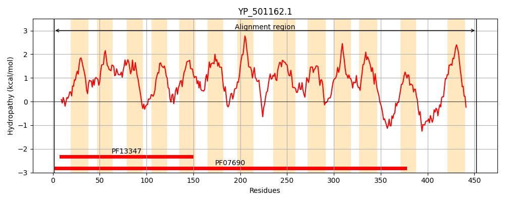

Hit Accession: Q7A3S4
Hit TCID: 2.A.1.3.61
Hit Description: gnl|BL_ORD_ID|15369 gnl|TC-DB|Q7A3S4|2.A.1.3.61 SA2203 protein OS=Staphylococcus aureus (strain N315) GN=SA2203 PE=4 SV=1
Mach Len: 452
e:0.000000
Query TMS Count : 13
Hit TMS Count: 14
TMS-Overlap Score: 12.400000
Predicted Substrates:CHEBI:8829;rhodamine 6G, CHEBI:4883;ethidium bromide, CHEBI:35268;quaternary ammonium salt, CHEBI:9502;tetraphenylphosphonium, CHEBI:5742;2'-(4-ethoxyphenyl)-5-(4-methylpiperazin-1-yl)-2,5'-bibenzimidazole, CHEBI:2496;doxorubicin, CHEBI:4330;daunorubicin, CHEBI:22582;antimicrobial agent
BLAST Alignment:
Score: 2239 , Bit scores: 867 bits, E-value: 0.0e+00, Alignment length: 452, Percentage identity: 99
Query: 1 MTALPSIMKDFEISYTQVQWLTTAFLLTNGIVIPLSALVIQRYTTRQVFLVGISIFFLGTLLGGLSPHFATLLVARIIQALGAGIMMPLMMTTILDVFQPHERGKYMGIFGLVIGLAPAIGPTLSGYLVEYFNWRSLFHVVAPIAAVTFLIGFKTIKNVGTTIKVPIDFISVIFSVLGFGGLLYGTSSISEKGFDNPIVLVSMIGGVVLVALFVLRQYRLSTPLLNFAVFKNKQFTVGIIIMGVTMVSMIGSETILPIFVQNLLHRSALDSGLTLLPGAIVMAFMSMTSGALYEKFGPRNLALVGMAIVVITTAYFVVMDEQTSTIMLATVYAIRMVGIALGLIPVMTHTMNQLKPEMNAHGSSMTNTVQQIAGSIGTAALITILSHASKNFSPTMSDYNGMNKIDMMNQIKVDTMLHGYHAGFLFALLITVVSFFCSFMLQGKKKEVDSRQ 452
+TALPSIMKDFEISYTQVQWLTTAFLLTNGIVIPLSALVIQRYTTRQVFLVGISIFFLGTLLGGLSPHFATLLVARIIQALGAGIMMPLMMTTILDVFQPHERGKYMGIFGLVIGLAPAIGPTLSGYLVEY NWRSLFHVVAPIAAVTFLIGFKTIKNVGTTIKVPIDFISVIFSVLGFGGLLYGTSSISEKGFDNPIVLVSMIGGVVLVALFVLRQYRLSTPLLNFAVFKNKQFTVGIIIMGVTMVSMIGSETILPIFVQNLLHRSALDSGLTLLPGAIVMAFMSMTSGALYEKFGPR LALVGMAIVVITTAYFVVMDEQTSTIMLATVYAIRMVGIALGLIPVMTHTMNQLKPEMNAHGSSMTNTVQQIAGSIGTAALITILSHASKNFSPTMSDYNGMNKIDMMNQIKVDTMLHGYHAGFLFALLITVVSFFCSFMLQGKKKEVDSRQ
Sbjct: 28 VTALPSIMKDFEISYTQVQWLTTAFLLTNGIVIPLSALVIQRYTTRQVFLVGISIFFLGTLLGGLSPHFATLLVARIIQALGAGIMMPLMMTTILDVFQPHERGKYMGIFGLVIGLAPAIGPTLSGYLVEYLNWRSLFHVVAPIAAVTFLIGFKTIKNVGTTIKVPIDFISVIFSVLGFGGLLYGTSSISEKGFDNPIVLVSMIGGVVLVALFVLRQYRLSTPLLNFAVFKNKQFTVGIIIMGVTMVSMIGSETILPIFVQNLLHRSALDSGLTLLPGAIVMAFMSMTSGALYEKFGPRKLALVGMAIVVITTAYFVVMDEQTSTIMLATVYAIRMVGIALGLIPVMTHTMNQLKPEMNAHGSSMTNTVQQIAGSIGTAALITILSHASKNFSPTMSDYNGMNKIDMMNQIKVDTMLHGYHAGFLFALLITVVSFFCSFMLQGKKKEVDSRQ 479 | Protein Hydropathy Plots: |
|---|
|  | |
Pairwise Alignment-Hydropathy Plot:
|
|---|
|